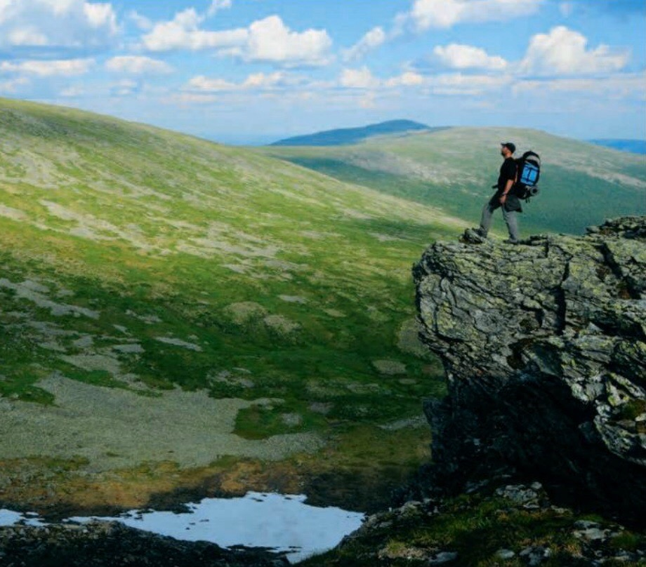
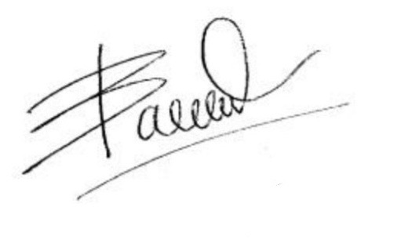

ПИСЬМО
РЕДАКТОРА
КУДА
глаза
ГЛЯДЯТ

Е
сли бы лет десят назад мне кто
-то сказал, что я буду работать в
National Geografic, в ответ я бы
просто рассмеялся в лицо. Окончив
с отличием экономический факуль-
тет и защитив диссертацию, я твёр-
до вознамерился посвятить себя
финансам и четыре года оттрубил аудитором в одной
известной сети отелей. Но что-то пошло не так, хотя те-
перь понятно, что как раз не так. Вслед за опытом пришла
скука, и потому, получив неожиданное предложение
отработать несколько летних месяцев гидом в Марокко,
я не долго думал - уволился и в ито-
ге провёл там целых пять лет. Потом
рабочая география расширилась
до Омана, Таиланда, Индии, Ма-
лайзии и Брунея, потом были мно-
гомесячные одиночные поездки
по Азии и Африке с рюкзаком, по-
том пошли первые пробы и ошиб-
ки пера на тревел-сайтах, в газетах
и журналах, опубликованные ста-
тьи и фоторепортажи, штатные по-
зиции в редакциях - одно цепляется
за другое и приводит к третьему. Так
что не важно, какое получено обра-
зование, - если от хобби у вас захва-
тывает дух, горят щёки и заходит-
ся сердце, сделать его своей работой
никогда не поздно.
Каждый номер National
Geographic Traveler - главный ис-
точник вдохновения, в том чис-
ле для меня и моих коллег. И я рад
в очередной раз отправиться в пу-
тешествие по его страницам вместе
с вами - обещаю: скучно не будет!

Иван Васин,
главный редактор
@ivan_sinbad
8
- National Geographic
TRAVELER
NAT-GEO.RU